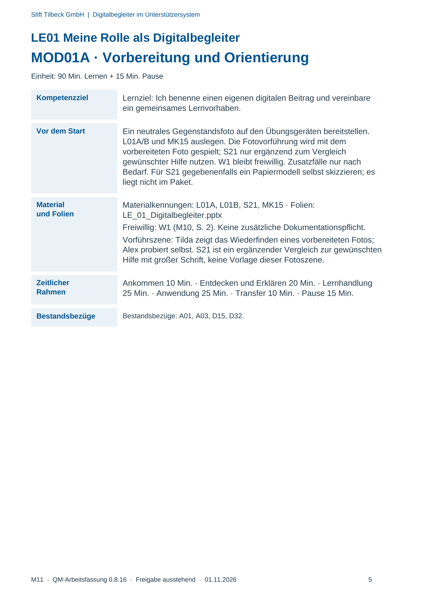
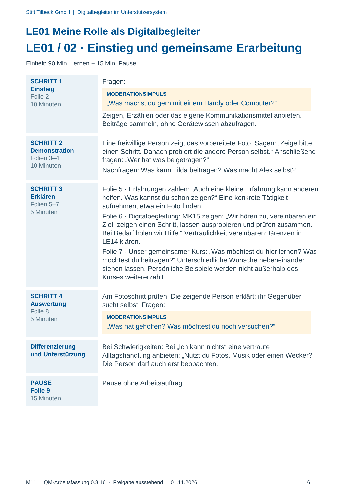
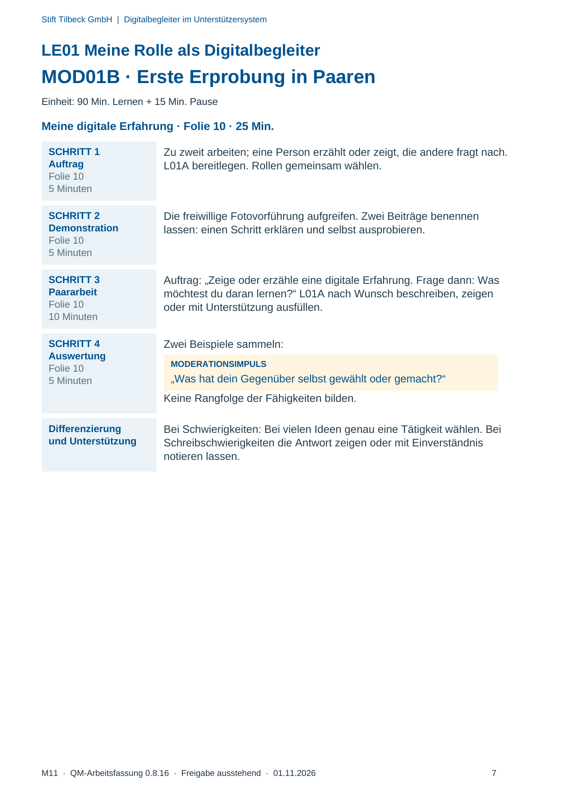
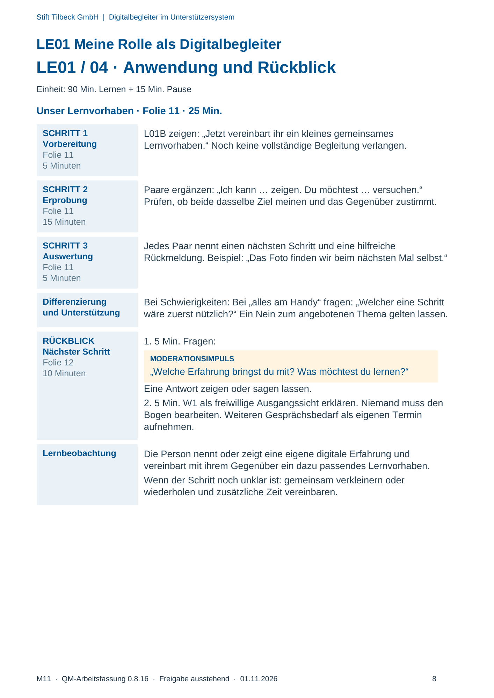

M11 · Originalseite 5, 6, 7, 8
Durchführungshilfe
Gezielte Original-Druckauswahl.
Fragen und Ankreuzfelder werden auf dem Ausdruck bearbeitet. Die Lesefassung speichert keine Antworten.
Lesefassung · Seite 5
Stift Tilbeck GmbH | Digitalbegleiter im Unterstützersystem
M11 · QM-Arbeitsfassung 0.8.16 · Freigabe ausstehend · 01.11.2026 5
LE01 Meine Rolle als Digitalbegleiter
MOD01A · Vorbereitung und Orientierung
Einheit: 90 Min. Lernen + 15 Min. Pause
Kompetenzziel Lernziel: Ich benenne einen eigenen digitalen Beitrag und vereinbare
ein gemeinsames Lernvorhaben.
Vor dem Start Ein neutrales Gegenstandsfoto auf den Übungsgeräten bereitstellen.
L01A/B und MK15 auslegen. Die Fotovorführung wird mit dem
vorbereiteten Foto gespielt; S21 nur ergänzend zum Vergleich
gewünschter Hilfe nutzen. W1 bleibt freiwillig. Zusatzfälle nur nach
Bedarf. Für S21 gegebenenfalls ein Papiermodell selbst skizzieren; es
liegt nicht im Paket.
Material
und Folien
Materialkennungen: L01A, L01B, S21, MK15 · Folien:
LE_01_Digitalbegleiter.pptx
Freiwillig: W1 (M10, S. 2). Keine zusätzliche Dokumentationspflicht.
Vorführszene: Tilda zeigt das Wiederfinden eines vorbereiteten Fotos;
Alex probiert selbst. S21 ist ein ergänzender Vergleich zur gewünschten
Hilfe mit großer Schrift, keine Vorlage dieser Fotoszene.
Zeitlicher
Rahmen
Ankommen 10 Min. · Entdecken und Erklären 20 Min. · Lernhandlung
25 Min. · Anwendung 25 Min. · Transfer 10 Min. · Pause 15 Min.
Bestandsbezüge Bestandsbezüge: A01, A03, D15, D32.
Originalseite ansehen

Lesefassung · Seite 6
Stift Tilbeck GmbH | Digitalbegleiter im Unterstützersystem
M11 · QM-Arbeitsfassung 0.8.16 · Freigabe ausstehend · 01.11.2026 6
LE01 Meine Rolle als Digitalbegleiter
LE01 / 02 · Einstieg und gemeinsame Erarbeitung
Einheit: 90 Min. Lernen + 15 Min. Pause
SCHRITT 1
Einstieg
Folie 2
10 Minuten
Fragen:
MODERATIONSIMPULS
„Was machst du gern mit einem Handy oder Computer?“
Zeigen, Erzählen oder das eigene Kommunikationsmittel anbieten.
Beiträge sammeln, ohne Gerätewissen abzufragen.
SCHRITT 2
Demonstration
Folien 3–4
10 Minuten
Eine freiwillige Person zeigt das vorbereitete Foto. Sagen: „Zeige bitte
einen Schritt. Danach probiert die andere Person selbst.“ Anschließend
fragen: „Wer hat was beigetragen?“
Nachfragen: Was kann Tilda beitragen? Was macht Alex selbst?
SCHRITT 3
Erklären
Folien 5–7
5 Minuten
Folie 5 · Erfahrungen zählen: „Auch eine kleine Erfahrung kann anderen
helfen. Was kannst du schon zeigen?“ Eine konkrete Tätigkeit
aufnehmen, etwa ein Foto finden.
Folie 6 · Digitalbegleitung: MK15 zeigen: „Wir hören zu, vereinbaren ein
Ziel, zeigen einen Schritt, lassen ausprobieren und prüfen zusammen.
Bei Bedarf holen wir Hilfe.“ Vertraulichkeit vereinbaren; Grenzen in
LE14 klären.
Folie 7 · Unser gemeinsamer Kurs: „Was möchtest du hier lernen? Was
möchtest du beitragen?“ Unterschiedliche Wünsche nebeneinander
stehen lassen. Persönliche Beispiele werden nicht außerhalb des
Kurses weitererzählt.
SCHRITT 4
Auswertung
Folie 8
5 Minuten
Am Fotoschritt prüfen: Die zeigende Person erklärt; ihr Gegenüber
sucht selbst. Fragen:
MODERATIONSIMPULS
„Was hat geholfen? Was möchtest du noch versuchen?“
Differenzierung
und Unterstützung
Bei Schwierigkeiten: Bei „Ich kann nichts“ eine vertraute
Alltagshandlung anbieten: „Nutzt du Fotos, Musik oder einen Wecker?“
Die Person darf auch erst beobachten.
PAUSE
Folie 9
15 Minuten
Pause ohne Arbeitsauftrag.
Originalseite ansehen

Lesefassung · Seite 7
Stift Tilbeck GmbH | Digitalbegleiter im Unterstützersystem
M11 · QM-Arbeitsfassung 0.8.16 · Freigabe ausstehend · 01.11.2026 7
LE01 Meine Rolle als Digitalbegleiter
MOD01B · Erste Erprobung in Paaren
Einheit: 90 Min. Lernen + 15 Min. Pause
Meine digitale Erfahrung · Folie 10 · 25 Min.
SCHRITT 1
Auftrag
Folie 10
5 Minuten
Zu zweit arbeiten; eine Person erzählt oder zeigt, die andere fragt nach.
L01A bereitlegen. Rollen gemeinsam wählen.
SCHRITT 2
Demonstration
Folie 10
5 Minuten
Die freiwillige Fotovorführung aufgreifen. Zwei Beiträge benennen
lassen: einen Schritt erklären und selbst ausprobieren.
SCHRITT 3
Paararbeit
Folie 10
10 Minuten
Auftrag: „Zeige oder erzähle eine digitale Erfahrung. Frage dann: Was
möchtest du daran lernen?“ L01A nach Wunsch beschreiben, zeigen
oder mit Unterstützung ausfüllen.
SCHRITT 4
Auswertung
Folie 10
5 Minuten
Zwei Beispiele sammeln:
MODERATIONSIMPULS
„Was hat dein Gegenüber selbst gewählt oder gemacht?“
Keine Rangfolge der Fähigkeiten bilden.
Differenzierung
und Unterstützung
Bei Schwierigkeiten: Bei vielen Ideen genau eine Tätigkeit wählen. Bei
Schreibschwierigkeiten die Antwort zeigen oder mit Einverständnis
notieren lassen.
Originalseite ansehen

Lesefassung · Seite 8
Stift Tilbeck GmbH | Digitalbegleiter im Unterstützersystem
M11 · QM-Arbeitsfassung 0.8.16 · Freigabe ausstehend · 01.11.2026 8
LE01 Meine Rolle als Digitalbegleiter
LE01 / 04 · Anwendung und Rückblick
Einheit: 90 Min. Lernen + 15 Min. Pause
Unser Lernvorhaben · Folie 11 · 25 Min.
SCHRITT 1
Vorbereitung
Folie 11
5 Minuten
L01B zeigen: „Jetzt vereinbart ihr ein kleines gemeinsames
Lernvorhaben.“ Noch keine vollständige Begleitung verlangen.
SCHRITT 2
Erprobung
Folie 11
15 Minuten
Paare ergänzen: „Ich kann … zeigen. Du möchtest … versuchen.“
Prüfen, ob beide dasselbe Ziel meinen und das Gegenüber zustimmt.
SCHRITT 3
Auswertung
Folie 11
5 Minuten
Jedes Paar nennt einen nächsten Schritt und eine hilfreiche
Rückmeldung. Beispiel: „Das Foto finden wir beim nächsten Mal selbst.“
Differenzierung
und Unterstützung
Bei Schwierigkeiten: Bei „alles am Handy“ fragen: „Welcher eine Schritt
wäre zuerst nützlich?“ Ein Nein zum angebotenen Thema gelten lassen.
RÜCKBLICK
Nächster Schritt
Folie 12
10 Minuten
1. 5 Min. Fragen:
MODERATIONSIMPULS
„Welche Erfahrung bringst du mit? Was möchtest du lernen?“
Eine Antwort zeigen oder sagen lassen.
2. 5 Min. W1 als freiwillige Ausgangssicht erklären. Niemand muss den
Bogen bearbeiten. Weiteren Gesprächsbedarf als eigenen Termin
aufnehmen.
Lernbeobachtung Die Person nennt oder zeigt eine eigene digitale Erfahrung und
vereinbart mit ihrem Gegenüber ein dazu passendes Lernvorhaben.
Wenn der Schritt noch unklar ist: gemeinsam verkleinern oder
wiederholen und zusätzliche Zeit vereinbaren.
Originalseite ansehen
